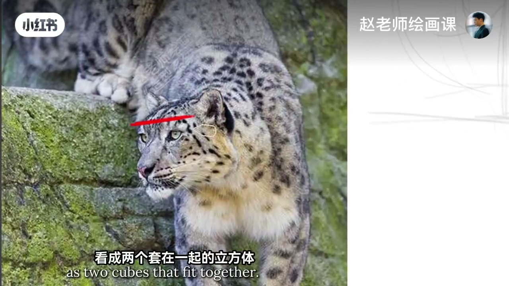
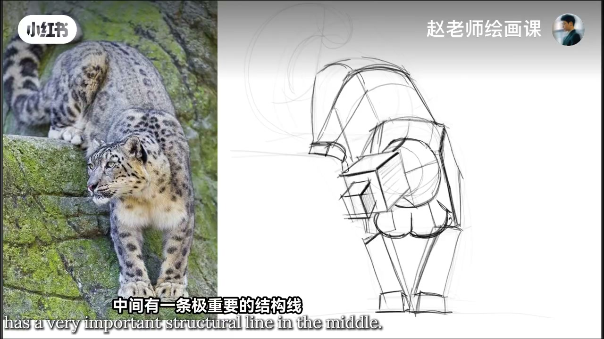
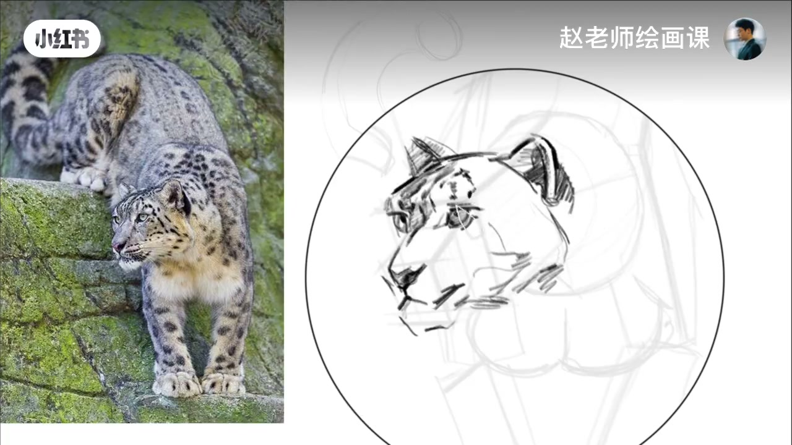
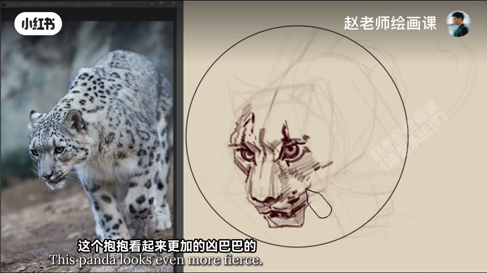

内容要点
画《功夫熊猫》里那位雪豹。几何形抓好型以后来到体块：头看成两个套在一起的立方体，颅顶和鼻梁中线并不平行；这个角度下脖子圆柱会被压缩得很短；前肢可看成两个长方体组合，腰是圆柱；粗壮尾巴中间有一条极重要的结构线要画准，才能和屁股体块自然连接。细画从头部开始——有体块就不慌；细画要大胆而严谨，关键位置要收、宽面要放。雪豹斑点贴合身体结构，大小分布与走向都有规律。再换类似角度练一张更凶的，头透视要准、眼睛生动，想象加一条甩向右边的粗壮尾巴会更生动。
知识结构
双立方头；颈短；肢／腰／尾结构线。
收放用笔；斑点贴结构。
透视准＋甩尾更生动。
猛兽头先套立方体并承认中线不平行；斑点是贴在体块上的规律，不是平面贴纸。
00:00-00:42雪豹体块拆解
今天画雪豹——对，就是功夫熊猫里的这位。老规矩：几何形抓好型以后就可以来到体块环节。可以先把头看成两个套在一起的立方体；颅顶和鼻梁的中线并不是平行的。
脖子的圆柱在这个角度下会被压缩得很短；整个前肢都可以看成两个长方体的组合；腰肯定是一个圆柱；粗壮尾巴中间有一条极重要的结构线要画准确，才能和屁股的体块自然连接。00:15／00:35。


00:42-01:12细画不慌：收放与斑点
从头部细画：有了体块的理解，画细节时一点都不带惊慌。细画一定要大胆而严谨——关键的位置要收，宽面要放。
雪豹的斑点要注意贴合身体的结构来画，还有大小分布、走向，都是有规律在里面的。00:50。

01:12-01:34换角再练一张
再来一个类似角度练习一张。这个看起来更加凶巴巴，要把头的透视画准确，眼睛细节要画得很生动；可以想象着加一个粗壮的尾巴在右边甩起，是不是会更生动了呢。
还想看哪一种动物的造型示范，评论区告诉我。01:15。

完整转录（40段）
以下文本由 Whisper medium 模型自动转录，可能存在少量识别误差，已尽可能修正。
今天我们来画一个雪豹
对,就是钩斧熊猫里的这位
你以为我是傻子
老规矩啊
几何龟那抓好型以后
就可以来到体块环节
可以先把头看成两个套在一起的立方体
颅顶和鼻梁的中线并不是平行的
脖子的圆柱在这个角度下
会被压缩的很短
整个前肢都可以看成
两个长方体的组合
腰肯定是一个圆柱了
这个粗壮的尾巴中间
有一条结重要的结构性
要画准确
才能和屁股的体块自然的连接在一起
那我们从头部细画
你看,有了体块的理解
画细节的时候
一点都不带惊慌的
细画一定要大大而严峻
关键的位置要收
那快面要放
写报的斑点要注意
贴合身体的结构来画
还有大小分布
还有走向
都是有它的规律在里面的
我们再来一个类似的角度
再练习一张
这个Bob看起来更加的凶巴巴的
那我们要把头的透视画准确
眼睛的细节要画得很生动
嗯,可以想向著加一个粗壮的尾巴
在右边甩起
是不是会更生动了呢
你还想看哪种动物的造型示范呢
评论区告诉我
拜拜